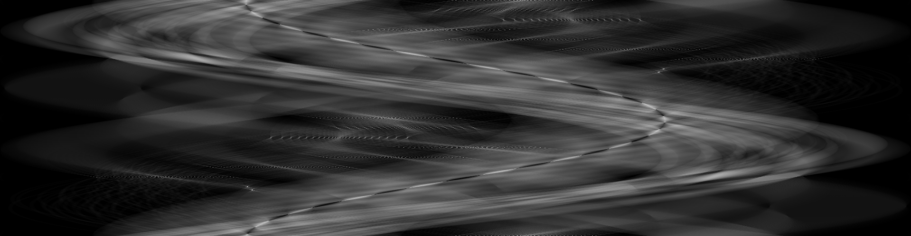
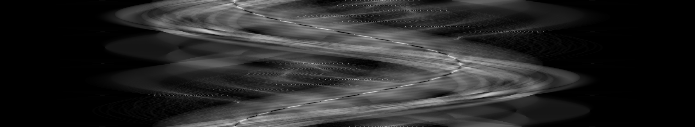
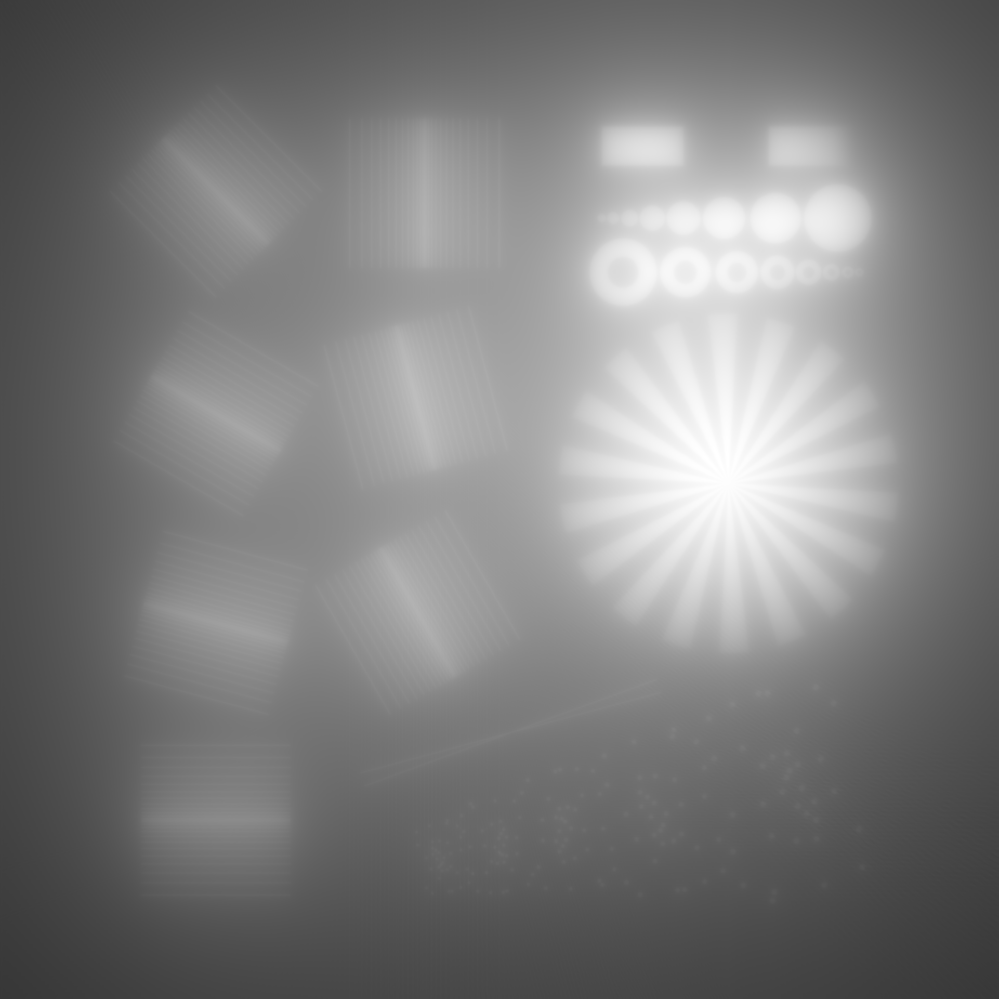
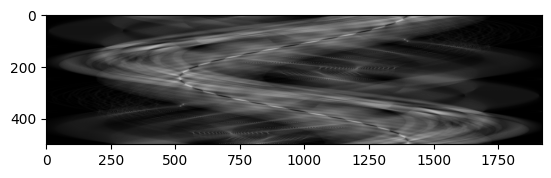
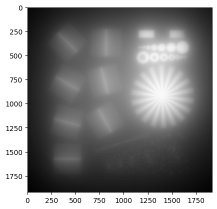

Benchmark and Comparison with Matlab, Astra, torch-radon
Tested on a AMD Ryzen 9 5900X 12-Core Processor with 24 Threads and a NVIDIA GeForce RTX 3060 with Julia 1.10.0 on Ubuntu 22.04.
Results
| RadonKA.jl CPU | RadonKA.jl CUDA | Matlab CPU | Astra CPU | Astra CUDA | torch-radon CUDA | |
|---|---|---|---|---|---|---|
| 2D sample - Radon | 1.1s | 0.07s | 0.39s | 7.0s | 0.025s | 0.011s |
| 2D sample - Backprojection | 1.4s | 0.50s | 0.37s | 6.4s | N/A | 0.008s |
| 3D sample - Radon | 7.4s | 0.28s | 9.01s | N/A | 1.12s | 0.062s |
| 3D sample - Backprojection | 7.9s | 0.53s | 3.24s | N/A | N/A | 0.063s |
RadonKA.jl
using IndexFunArrays, ImageShow, Plots, ImageIO, PlutoUI, PlutoTest, TestImages
using RadonKA
using CUDA, CUDA.CUDAKernels
using BenchmarkTools
sample_2D = Float32.(testimage("resolution_test_1920"));
sample_2D_c = CuArray(sample_2D);
simshow(sample_2D)
angles = range(0, 2π, 500);
angles_c = CuArray(angles);
# run those cells multiple times
sinogram = radon(sample_2D, angles);
@btime sinogram = radon($sample_2D, $angles);
simshow(sinogram)
@btime sample_backproject = backproject($sinogram, $angles);
@btime CUDA.@sync sinogram_c = radon($sample_2D_c, $angles_c);
sinogram_c = radon(sample_2D_c, angles_c);
@btime CUDA.@sync sample_backproject_c = backproject($sinogram_c, $angles_c);
sample_3D = randn(Float32, (512, 512, 100));
sample_3D_c = CuArray(sample_3D)
sinogram_3D = radon(sample_3D, angles);
@btime radon($sample_3D, $angles)
@btime backproject($sinogram_3D, $angles)
sinogram_3D_c = radon(sample_3D_c, angles_c)
@btime CUDA.@sync radon($sample_3D_c, $angles_c)
@btime CUDA.@sync backproject($sinogram_3D_c, $angles_c) 
torch-radon
import torch
import torch_radon
volume = torch_radon.volumes.Volume2D()
angles = torch.tensor(np.linspace(0, 2*np.pi, 500), dtype=torch.float32, device="cuda")
sample = torch.rand(1,1920, 1920, device="cuda")
radon = torch_radon.ParallelBeam(volume=volume, angles=angles, det_spacing=1.0, det_count=1920)
%%timeit
radon.forward(sample)
torch.cuda.synchronize()
sinogram = radon.forward(sample)
%%timeit
radon.backward(sinogram)
torch.cuda.synchronize()
angles = torch.tensor(np.linspace(0, 2*np.pi, 500), dtype=torch.float32, device="cuda")
sample = torch.rand(100, 512, 512, device="cuda")
radon = torch_radon.ParallelBeam(volume=volume, angles=angles, det_spacing=1.0, det_count=512)
%%timeit
radon.forward(sample)
torch.cuda.synchronize()
sinogram = radon.forward(sample)
%%timeit
radon.backward(sinogram)
torch.cuda.synchronize()Matlab (R2023a)
arr = single(imread("/tmp/sample.jpg"));
%arr = rand(1920, 1920, "single");
theta = linspace(0, 360, 500);
tic;
R = radon(arr, theta);
toc;
R = R / max(R(:));
imwrite(R, "/tmp/matlab_sinogram.png");
tic;
iR = backproject(R, theta, "linear", "none");
toc;
iR = iR / max(iR(:));
imwrite(iR, "/tmp/matlab_backproject.png");
x = (rand(100, 512, 512, 'single'));
theta = linspace(0, 360, 500);
y = (zeros(size(x, 1), size(radon(squeeze(x(1, :, :)), theta), 1), size(radon(squeeze(x(1, :, :)), theta), 2), 'single'));
ix = zeros(100, 514, 514, "single");
tic;
for i = 1:size(x, 1)
y(i, :, :) = radon(squeeze(x(i, :, :)), theta);
end
toc;
tic;
for i = 1:size(y, 1)
ix(i, :, :) = backproject(squeeze(y(i, :, :)), theta);
end
toc; 
Astra
Some of the benchmarks did not run properly or were providing non-sense. Astra's docs are unfortunately slightly confusing...
import numpy as np
import matplotlib.pyplot as plt
import imageio.v3 as iio
import astra
im = np.array(iio.imread('/tmp/sample.png'), dtype=np.float32)
plt.imshow(im)
vol_geom = astra.create_vol_geom(1920, 1920)
angles = np.linspace(0,2 * np.pi,500)
proj_geom = astra.create_proj_geom('parallel', 1.0, 1920, angles)
proj_id = astra.create_projector('line', proj_geom,vol_geom)
%%time
sinogram_id, sinogram = astra.create_sino(im, proj_id)
np.copy(sinogram);
plt.imshow(sinogram)
proj_geom = astra.create_proj_geom('parallel', 1.0, 1920, angles)
proj_id = astra.create_projector('cuda', proj_geom,vol_geom)
%%time
sinogram_id, sinogram = astra.create_sino(im, proj_id)
np.copy(sinogram);
rec_id = astra.data2d.create("-vol", vol_geom)
cfg = astra.astra_dict('BP')
cfg["ReconstructionDataId"] = rec_id
cfg["ProjectionDataId"] = sinogram_id
cfg["ProjectorId"] = proj_id
# Create the algorithm object from the configuration structure
alg_id = astra.algorithm.create(cfg)
# Run back-projection and get the reconstruction
%%time
astra.algorithm.run(alg_id)
f_rec = astra.data2d.get(rec_id)
#np.copy(f_rec)
im_3D = np.random.rand(100, 512, 512)
vol_geom = astra.create_vol_geom(512, 512, 100)
proj_geom = astra.create_proj_geom('parallel3d', 1.0, 1.0, 512, 512, angles)
#proj_id = astra.create_projector('line', proj_geom,vol_geom)
%%time
proj_id, proj_data = astra.create_sino3d_gpu(im_3D, proj_geom, vol_geom)
np.copy(proj_data)
rec_id = astra.data3d.create('-vol', vol_geom)
# Set up the parameters for a reconstruction algorithm using the CUDA
cfg = astra.astra_dict('BP3D_CUDA')
cfg['ReconstructionDataId'] = rec_id
cfg['ProjectionDataId'] = proj_id
# Create the algorithm object from the configuration structure
alg_id = astra.algorithm.create(cfg)
%time
astra.algorithm.run(alg_id, 1)
rec = astra.data3d.get(rec_id)
np.copy(rec) 